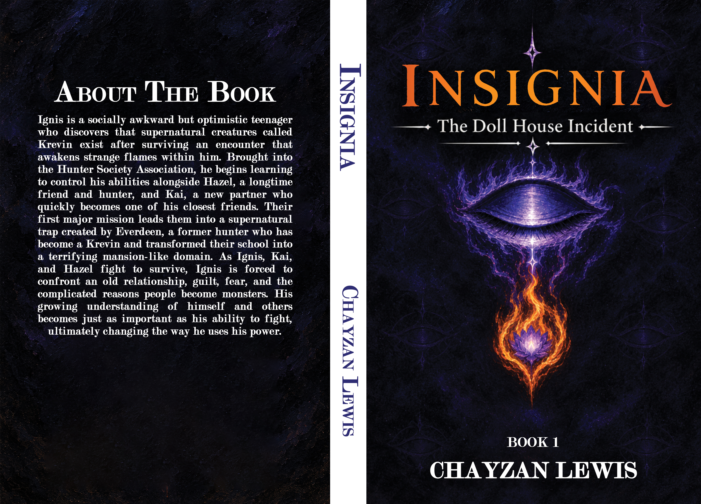

Chapter One: Distroted Awakening

That night I didn't really have much on my mind. It had been a long day, for sure, but so was every other day. Go to school, do homework, and go to sleep. That's the usual pattern.
However, as I drifted off into the soft solitude of slumber and felt myself swallowed by the subtle grasp of sleep, my eyes finally closed peacefully. But something felt off…
I saw the city I lived in extend outwards, like space decided to stretch itself out just enough to feel unsettling. I heard a gentle hum, like a stove being lit, then shrieks. They were loud, visceral cries of pain. It was as if terror itself held a screaming contest for the sake of torment.
I tried to run, then quickly realized they were running from me. Blackish-indigo flames erupted from my body, consuming everything mercilessly. Yet there was no smoke, not even ash. Just screaming, pain, then nothing.
At that moment, I envied the people who got the chance to flee, because next I felt my own flames consuming my body.
It was like death framing itself as a mother hugging her son…
“Please, someone help me!” I finally screamed out.
But no one came.
“I wish I could run too… I–”
“Ignis! Get your butt out of bed right now! The bus comes in five minutes!” my mother screamed.
“Huh? What's going on?”
My heart raced as cold sweat dripped down my face.
“It must have been another dream…”
My mother looked at my lingering form in bed with disgust.
“Dream? Dream?! No, this is the land of the living, and if you want to stay with the living, get ready for school!”
Still in pure fear from my dream, I quickly arose from my formerly drowsy state. I readied myself for the task of avoiding certain death in the real world after escaping certain death in my dream.
The irony of being saved from fictional death and threatened with real death wasn't lost on me at all.
I quickly threw on whatever clothes I could find, then ran outside as fast as I could. I barely made it onto the bus.
However, it's time for a harder challenge: finding a seat with no one else. I would much rather go back to that dream or have it come true than the dreaded…
Social interaction.
The very thought made my skin crawl.
But seriously, time to actually sit down.
As I found a seat and sat down, I noticed my former crush sitting in the opposite seat in that row.
I say "former" because she got offended at me for thinking she was nice when it turned out she was very mean. Looking at her makes me ill. Her once-admirable looks now seemed like a cruel contrast to her real nature.
Honestly, it serves me right for expecting anything other than drama from high school.
But every time I come to that conclusion, that tiny voice in my head keeps telling me that I should try to break out of my shell. Maybe actually have fun and talk to people.
But the other voices say otherwise, more loudly and authoritatively.
Fun? Yeah, that's all it is, fun until the drama hits.
Fun until you're the punching bag of the group for being too shy and unwilling to defend yourself.
Fun until you oscillate between crying about being lonely or complaining about high school drama.
Worst of all, many of these issues are made worse because my school is so small.
Suddenly, from the corner of my eye, I noticed Himari smiling a little at me. I looked over at her, and she immediately froze up and looked away, blushing.
Oh, that's right…
My former crush was named Himari.
I wasn't interested in dissecting the meaning behind that look, though.
I sighed softly as I drifted off into sleep again, brilliant considering my nightmare today, I know.
However, this dream was surprisingly peaceful. For that one moment, I felt like the whole world was finally still.
“Ignis.”
The landscape around me was full of light and tranquility.
“Ignis?”
Nothing could disturb me, not even that annoying voice.
“Hey, wake up!” my friend Hazel exclaimed boldly as I stuttered awake.
“Rise and shine, sleeping beauty!” she teased with a childlike gleam.
Great. Hazel is here. I'm approximately infinitely happier now.
She was genuinely good company for me. Where I seemed deadpan yet surprisingly optimistic and expressive when I felt like it, she was a loud, constant energy.
“Ugh, why are you waking me up? We aren't even at school yet…”
“Yes, we are. We just got here, actually. Are you good? You seem a bit more in your head than usual.”
She laughed, attempting to mask genuine care and concern.
“I'm fine. Thinking twenty-four-seven is my default.”
Hazel laughed.
“Okay, I'll take your word for it! But hey…”
She leaned closer.
“Did you hear the news?”
I nodded.
“Oh, you mean about the… incident?”
She nodded with concern.
“Yeah… hey, I know you have night classes today, but… please try to call your mom to pick you up today. Okay?”
I shook my head with disappointment.
“Knowing her, she will complain about gas money and having to come home tired. Besides, I just need to walk up to the bus stop, and then I should be fine. What could possibly go wrong?”
Hazel looked very concerned at the thought.
“That's what everyone says… until they encounter one of… them. We're safe during the day, and hunters protect us at night. But that safety is why so many of us act careless until our insides are torn out by those things.”
The bus doors opened, signaling our arrival.
I couldn't help but think about those words. Not because I was any less naive than everyone else, though. The fact that she, of all people, was even remotely serious made me reconsider my worldview for a second.
“Are they truly that bad? I mean, more people die from vending machines than—”
“Don't give me that!” Hazel interrupted. “The death rate in our country alone is terrifying, and you're going to joke about vending machines?!”
As we finally entered the school building, I laughed.
“Oh, please. It's not like I would die or anything, not like it would be that big of a loss!”
I looked at her, expecting a laugh.
But instead, I saw something that genuinely put the fear of death in me.
She wasn't laughing with me. She looked at me as if I had said the most vile thing imaginable.
“Ignis… how could you even say that?”
I straightened up quickly.
“S-sorry. I'll be careful tonight! I'm sorry for sounding so careless.”
She sighed.
“Ignis, this is what I mean. Honestly, if a Krevin saw you, I'm scared you wouldn't care enough to defend yourself. Sometimes I wonder if you're just joking or if you actually care that little about yourself.”
Confused, I tilted my head with genuine perplexity.
“Huh? What's that supposed to mean?”
Just then, the school bell rang.
Yup, the same tired trope of being saved by the bell. One of the few joys of being on the late bus.
But if this was a story, then we would call this plot convenience.
But my thoughts didn't linger on how strangely self-aware that felt. Instead, I pondered what Hazel said.
Why was she acting so concerned?
I thought people were just either disappointing or fun to talk to. Maybe there is still more for me to understand about people than I thought.
As the day dragged on, Hazel seemed to be ignoring me. Or maybe both of us were too shaken to approach each other.
The daytime classes were long and tedious.
But as the other students left, I had to stay behind for my night ones.
After dragging myself through English class and being bored to death by calculus, it was finally over.
The bell rang, signaling that my prison sentence was over.
I grabbed my stuff and headed outside.
The night air felt strangely colder than usual… must be the seasons changing.
I started walking to the bus stop.
The walk home from school never feels any better. But at least the bus stop is close by.
That makes you wonder, though.
“Why would a world full of nocturnal monsters have night school?! It's like they're waiting for something bad to happen…”
“Well, good thing we have hunters. They at least die for us civilians. How noble.”
At that moment, I felt a sudden heavy presence.
“Yeah. Real noble.”
A cold voice whispered.
“I wonder how many like you die without them knowing?”
At that moment, I didn't know what made more sense.
Should I run?
Pee myself?
Pee myself, then run?!
Or maybe I should die from pure fear as I make my decision.
I turned around, ready to possibly face whatever might have been waiting there to kill me.
But nothing was there…
A sigh released tension out of me that I didn't even notice.
But that presence was still there.
Maybe it was just fear, I thought. It is nighttime, so of course I would be at least a little jumpy.
Or maybe my mind is playing tricks on me.
My nightmares really must be getting to me.
I actually thought I was about to get a POV of a horror protagonist.
I started laughing to myself like an idiot.
“Must have been the wind! And here I thought I was going to be the headline of some horror movie or missing poster!”
The statement seemed to be announced to no one.
Or so I thought.
“Yeah, that would be pretty cliché, huh?”
I spun around so fast it was almost comical.
Tears ran down my face as I froze.
I felt pure terror; meanwhile, the being in front of me seemed to be aroused by my fear like a predator.
“Look at you… that delicious fear of yours is mouth-watering.”
Her words were full of honey, yet laced with poison.
She was licking blood off her fingers, likely from a fresh kill.
Then her eyes sharpened, her fangs gleaming in the moonlight as she lunged at me.
I fell with a thud, then she grinned, pinning my left arm hard enough for a loud pop to be heard as I screamed in pain.
“You can't move, can you?”
Her grip on my arm tightened so much that I thought the bone would splinter.
Then, for some reason, she phased her hand into my chest and seemingly touched my very being.
I immediately convulsed in pain as I felt myself taking the perspective of other victims she had tormented.
She smiled as she saw tears of blood stream down my face.
“Don't worry, poor baby. I'll make yours especially painful.”
I howled in pure pain as she bit down on my arm, yet I could feel that she was holding back.
She continued to tear me apart but wouldn't let me die… not yet.
So this is how I end?
Slowly, painfully…
Honestly, part of me was laughing.
I was too naive to realize that Hazel actually cared for a reason…
Why didn't I listen to her? … I thought.
“She was right, wasn't she?”
The Krevin smiled knowingly like a child at a candy store as I stared at her in horror.
It stood up and lifted me up by my hair as I screamed.
More tears fell down my face as I noticed her voice taking on a similar shape to my mom's voice.
“Poor, poor thing. You're kicked around so easily and break so well. No wonder so many walk over you. You're a fun toy to snap and bend over and over again…”
She seemed to lean forward, only stopping when she somehow noticed I could feel her cold breath on my skin.
“Your soul is so obvious…”
Her smile widened, showing sharp teeth that gleamed in the moonlight.
She scratched her claws across my chest slowly as I shrieked in pain.
She licked the blood off her fingers as she locked eyes with me.
“Already tasting better. You’ll make a fine meal.”
I struggled as I spoke.
“Shut up and just kill me already!”
A genuine laugh escaped her.
“Oh, you would love that, wouldn't you?”
She dislocated my thumb as I screamed, nearly choking from sheer pain. She mockingly soothed me as she relocated it with a sickening crunch sound.
“Aw, poor baby. It's okay; Mommy's here for you.”
She traced patterns on my back with her claws, cutting deep into my skin. It was like her own twisted mockery of nurturing care.
“Speaking of Mommy, even your own mother knows that you're a failure. I bet she would be happy if you died out here.”
She leaned in as if she were trying to kiss my cheek to soothe me, then snarled her face into a bite.
Tears of pain ran down my cheeks as I felt her suck the blood from the wound.
“Why else would she be more concerned with herself all the time than taking her own son home?”
She chuckled loudly as the words seeped too far into my very soul.
Tears continued to stream down my face, only to fuel her seemingly endless desire to torment me.
Something started to burn within me.
I wasn't sure if it was rage or something worse.
But the next words that came out of her mouth made the answer clear.
“You hate it, don't you? When people don't act the way you assume they are? When the people you hold your hand out to hurt you and act sweet.”
She stroked my other cheek with mock motherly affection, digging into it with her claws.
“When I give you sweet words while I tear you apart, you hate that so well.”
“But I know who you hate even more…”
She grabbed my face as she looked too closely into my eyes. “You.”
At that moment, I knew that whatever came out of me couldn't just be called rage anymore.
No…
I wanted this thing gone, not dead. That would be mercy.
I wanted her gone.
And the words that spilled out of my mouth next made everything else I knew about myself feel like a lie.
“You're right… I do hate myself… That's why I hate every single word coming out of your mouth!”
It laughed like a deranged animal.
“Finally, a real meal!”
As if finding a real reason not to hold back, she threw me into a tree.
“I finally struck a nerve, didn't I?!”
I slammed into the tree so hard that I felt the air get knocked out of my body.
Her voice dropped out of its motherly honey tone, revealing its true wickedness.
“Scream and scream as I make your blood stream. You die when I'm full…”
Completely given up, I said, “You know… I have no chance of beating you. And you're right… I do hate myself. A lot…”
But despite my mind's surrender, I acknowledged something that shocked me before I even finished the sentence.
“But despite that… Something about hearing you say those words makes me sick. I don't care anymore about your games. I'll just survive… and if I don't? I don't…”
For the first time, seemingly in her whole life, she seemed to have genuinely lit up with uncontainable joy.
It was like she was a feline who just got her first taste of catnip.
But before she could fully open her mouth to spit out some more venom, I felt a warmth that felt wrong burn through my body.
Then the distance between us vanished as I closed in.
A crackle, pop, and screaming followed.
Then nothing.
Her whole arm completely burned away like it was never there.
Not even smoke or ash came off it.
It quickly started to regenerate, but she was still in pain.
“What the heck was that, you little wretch?!”
It barked out…
Yet I felt nothing.
Then I felt something only describable by one word.
“Die.”
In an instant, I grabbed her head and slammed it into the ground.
Flames erupted from my hand as the ground splintered and cracked with a roar, but the flames were wrong.
They were a blackish-indigo and were seemingly fueled by the primal, spiteful desire to survive.
She broke free and lashed out, swiping at nothing as I appeared behind her.
She lunged back quickly.
I could see a feral gleam in her eyes.
“What the heck even are you?!”
I tried to respond, but nothing happened.
Then my mouth and words moved with a voice I didn't yet know wasn't mine.
“You are no longer going to exist.”
The air in my palm shifted as if forced to agree as it combusted into flame.
“Burn, not even ash nor remnant.”
The words left absolutely no room for protest or question.
The creature froze.
Its pride wasn't great enough to argue with the reality that it wasn't simply being hunted now.
It was going to be erased, mercilessly, without any care other than the desire for it to no longer breathe.
Author